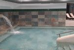
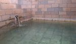

Безмедикаментозное восстановление здоровья в Мерсине
Подарите себе здоровье, сочетая отдых на Средиземноморском побережье Турции
с силой термальных источников Мерсина.
Уникальный морской климат, более 300 солнечных дней в году, чистый морской воздух и земля с библейской историей
создают гармоничные условия для естественного оздоровления.
Уникальный состав источников Мерсина по ряду лечебных показателей превосходит признанные мировые эталоны — Карловы Вары,
Ессентуки и Боржоми. По классификации Э. Осанна эти воды относятся к натриево-хлорным и обладают сверхвысокой
минерализацией (6258 мг/л), что определяет их особые свойства:
Биологически активная сера (35 мг/л): критически важный элемент для активации иммунной системы
и достижения стойкой ремиссии при псориазе, артритах и других системных процессах.
Высокое содержание сероводорода (H₂S): благодаря высокой проникающей способности активно расширяет капилляры,
улучшает периферическое кровообращение и стимулирует регенерацию тканей на клеточном уровне.
Эффект «Антисептической брони - солевой плащ»: сочетание метаборной кислоты и хлоридов создаёт
на коже активный защитный барьер. Это позволяет быстро купировать воспаления и изолировать раздраженные участки,
давая клеткам ресурс для естественной регенерации.
Вам будет подобрана индивидуальная программа, которая учитывает природу ваших недугов и текущее состояние.
Она направлена на активацию внутренних ресурсов для целостного оздоровления
Что традиционно лечат на минеральных и термальных водах
Заболевания суставов и опорно‑двигательного аппарата:
ревматоидные артриты, артрозы на ранних стадиях, подагра, последствия и реабилитация травм.
подробнее →
Нарушения обмена веществ:
лишний вес, висцеральное ожирение, нарушения углеводного и жирового обмена.
подробнее →
В основу программ вошли ключевые подходы к регуляции организма, разработанные
Ф. Майером,
А. Залмановым
и К. Бутейко, сформировавшие целостное понимание процессов саморегуляции.
Море, чистый ионизированный воздух, сила минеральных вод и энергетика исторического места в сочетании с натуральными
продуктами с вулканических почв, насыщенными фитонутриентами, многократно усиливают эффект восстановления.
Вы научитесь слышать свое тело и сохранять достигнутый баланс. Персональные рекомендации по питанию,
гимнастике и дыхательным практикам помогут вам самостоятельно продолжать путь
к полноценной жизни и после завершения программы.
Мерсин — юг Турции на берегу Средиземного моря
Название города переводится как «мирт» — растение с нежными белыми цветами. Мерсин — миллионный город и административный
центр одноимённой провинции, выросший на земле, хранящей десятки исторических слоёв. В 2025 году открылся новый
международный аэропорт.
Несмотря на стремительное развитие, Мерсин бережно сохраняет исторический облик.
Колоритная пешеходная набережная с ресторанами и кафе соседствует с римской колоннадой у разрушенного временем
древнегреческого порта Соли. На территории современного Мерсина был древнегреческий город Соли — некогда значимый центр с оживлённым морским портом.
От его причала сегодня остались лишь руины, покрытые солёным налётом времени.
Во времена римского владычества сюда пришёл великий полководец Гней Помпей — человек, чьё имя гремело от Дарданелл
до пустынь Востока.В 63 году до н. э. он покорил Иерусалим, очистил киликийское побережье от пиратов. Поселившись здесь,
Помпей переименовал город в честь себя. Так появился Помпеиополис — портовый город на перекрёстке римских дорог.
Уникальный климат и плодородные киликийские земли издавна давали изобилие фруктов, овощей, зерновых, винограда и оливок. Благодаря природному
богатству регион имел стратегическое значение и служил связующим звеном между Европой, Азией и Африкой через торговые и римские дороги,
а также морские маршруты.
Через эти земли проходили торговые пути и маршруты христианского паломничества. Верующие приходили к дому Святого Апостола Павла и к храму
Святой Фёклы, у которой издавна просили исцеления — и продолжают обращаться к ней за помощью и сегодня.
В Средние века здесь располагалось армянское царство, оно служило заслоном Византии от арабских набегов. Крестоносцы
здесь останавливались для отдыха и пополнения припасов во время своих походов. До наших дней сохранились укрепления и замки,
напоминающие о стратегическом значении Киликии.
Кызкалеси — крепость на острове и крепость в Силифке, основанная Селевком Никатором I, создателем Селевкидского царства.
Именно свержение селевкидской власти царя Антиоха IV в Иерусалиме легло в основу событий, которые евреи отмечают праздником
Ханука. Обе крепости впечатляют размерами и мощью.
Целостный цикл терапии
🔹 Встреча, трансфер и размещение (апартаменты или гостиница)
🔹 Углублённое очное общение и выявление индивидуальных особенностей
🔹 Совместное понимание причин недуга и разбор физиологии
🔹 Освоение пространства, климата и режима
🔹 Подбор и планирование посещений термальных источников, СПА и саун
🔹 Использование минеральной воды в рационе и очистительных практиках
🔹 Формирование индивидуального плана восстановления
✝️ Духовно‑историческое путешествие к дому Апостола Павла в Тарсе — современном Тарсусе.
Духовно‑историческое путешествие к музею на месте раскопок дома, в котором родился и вырос Святой Апостол Павел
— реальный человек, своими проповедями изменивший мир. Его слова вошли в основу Нового Завета —
«Послания святого апостола Павла».
✝️ Посещение подземного храма‑пещеры Святой первомученицы Феклы.
История святой Фёклы, ученицы апостола Павла, известна из апокрифических писаний II века. Молодая девушка чудом спаслась
от преследования за веру в Господа Иисуса Христа, которую приобрела, внимая проповедям апостола Павла. Она подверглась
суду и гонениям, а после побега из Иконии укрылась в пещере в Силифке.
🏛️ Руины древнегреческого города Элайусса Себасте.
Элайусса возникла во II веке до н. э. Само название (Ελαιούσα) происходит от греческого слова elaion — «масло», что связано с обилием
оливковых деревьев в регионе и производством масла. Естественная бухта, защищавшая от восточных ветров и штормов, делала его удобным портом
для торговли и морских связей. Первоначально он был основан Империей Селевкидов, а затем процветал под властью Римской империи.
В зависимости от персональных предпочтений, бюджета, сезона, выбранных методов и практик оздоровления,
а также желаемой удалённости от пляжа доступны разные варианты проживания.
Получить консультацию и уточнить стоимость, даты и варианты проживания вы сможете после подачи заявки:
🏘️ Апартаменты — от 600 ₺ в сутки.
Практичный выбор для проживания у моря: доступный по бюджету, с возможностью готовить из свежих фермерских продуктов,
купленных на колоритных местных рынках.
Ближайшие термальные источники: BN Hotel Thermal & Wellness — примерно 40 км. Дневное посещение: от 3500 ₺

BN Hotel Thermal & Wellness
Возможен и более бюджетный термальный вариант — по предварительной договорённости, подходит не всем.

Бюджетный термальный источник
5★ Отели входят в топ 10 Турции — от 12 000 ₺ в сутки.
С термальными источниками — доступны как стандартные номера, так VIP и люксовые апартаменты и отдельные виллы с термально‑минеральными бассейнами и джакузи.
★★★★★BN Hotel Thermal & Wellness
Локация — предгорье, в 70 км от аэропорта, 30 км от центральной набережной Мерсина.
Чифтехан
Населённый пункт в горах (1000 м над уровнем моря), примерно 100 км от аэропорта и 140 км от пляжа.


 Перейти к заявке
Перейти к заявке